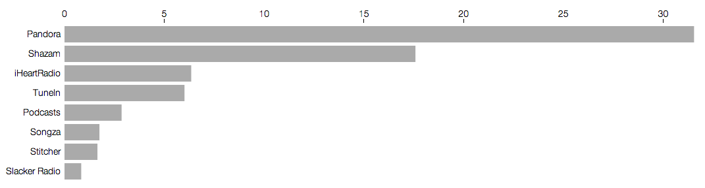
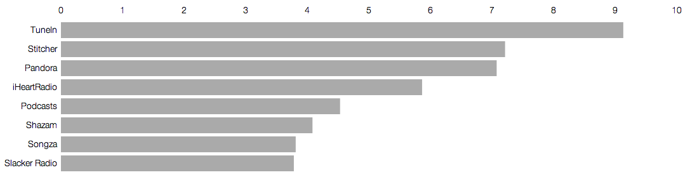

Usage in the Radio App Market
Daniel Feusse
Competitor Overview, Usage Data
node size = selected variable. node color = other variable
Pandora and Shazam Dominate the Market
-
Almost three quarters of users in market are actively using two apps, Pandora (46%) or Shazam (26%)
-
Both iHeartRadio & TuneIn have 9% of the market's overall userbase
- No remaining app in market have above 4% MAU
DPM, Much Lower Variance
-
TuneIn is the clear leader having over 9.1 DPM
-
Stitcher and Pandora form the next cluster, both have around 7 DPM
-
iHeartRadio has just under 6 DPM
-
The rest of the market is between 3.75 - 4 DPM
Entire Market, Average Usage
MAU, average

DPM, average

Spotify?
-
Free streaming usage vs Pandora?
-
Radio usage vs Pandora?
-
Premium vs free?
-
Social aspect?